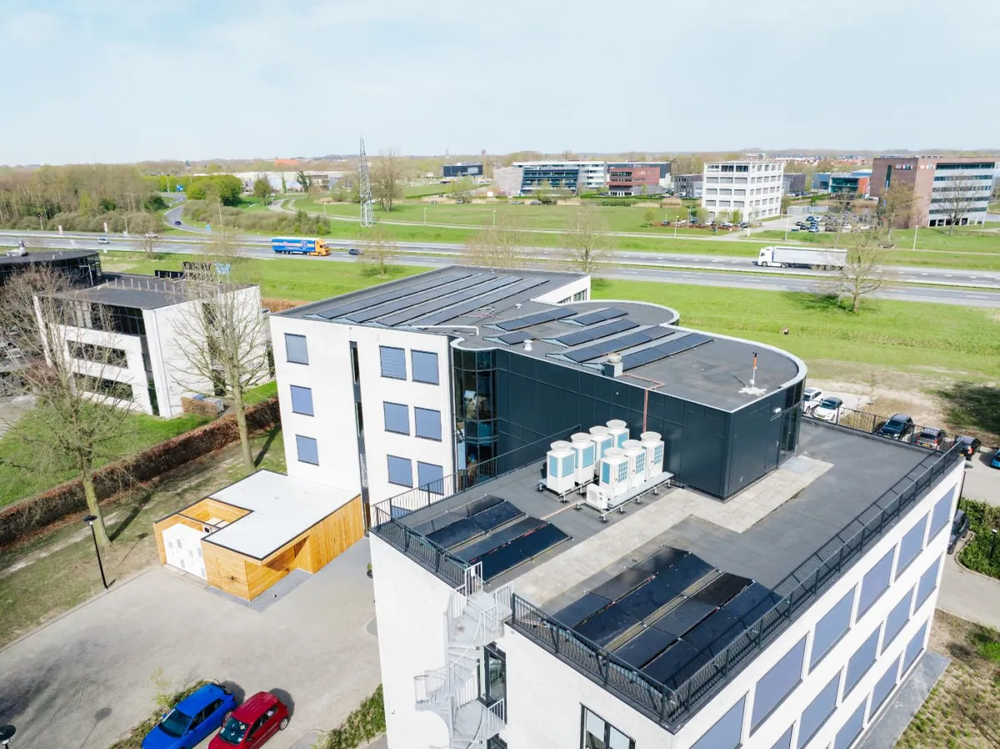
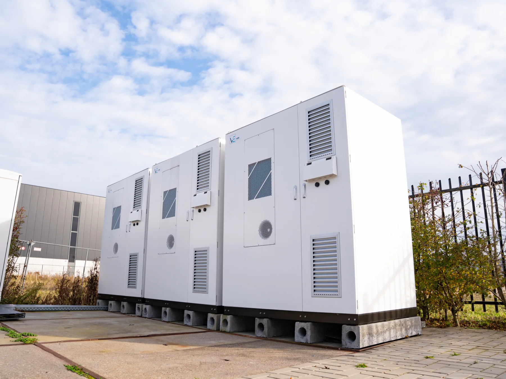
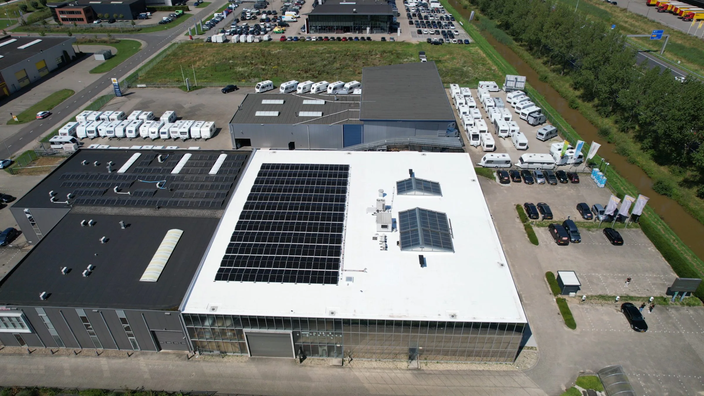
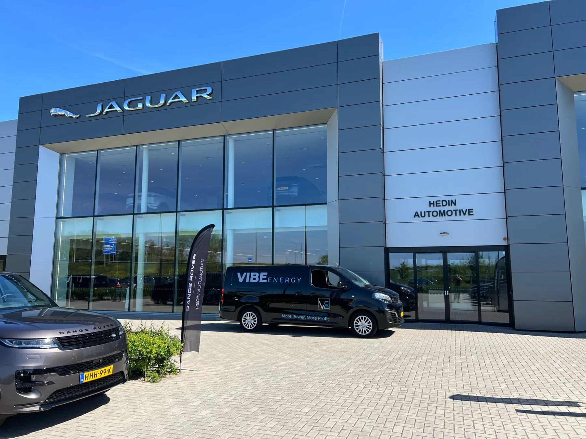

Batterijopslag die capaciteit vrijspeelt op uw eigen aansluiting.
Opwek en verbruik vallen zelden samen, en de aansluiting zit vol op precies het verkeerde moment. Een gestuurde batterij vangt de piek op, bewaart eigen opwek tot u hem nodig heeft en maakt zo ruimte voor laden en groei.
Energie is er wel. Alleen niet op het juiste moment.
Bijna elke locatie met een capaciteitsprobleem heeft geen tekort aan energie, maar een tekort aan gelijktijdigheid. Dit zijn de drie vormen waarin dat zich aandient.
De aansluiting knelt
Verzwaren duurt jaren of kan in uw regio helemaal niet. Zolang dat zo is, staat elke uitbreiding stil: geen extra machines, geen extra laadpunten.
De piek kost geld
Een korte gelijktijdige piek bepaalt uw gecontracteerde vermogen voor het hele jaar. Die piek afvlakken is goedkoper dan hem inkopen.
Eigen opwek lekt weg
Zonder opslag gaat de overproductie van het dak terug het net op, vaak op het moment dat daar het minst voor betaald wordt.

Niet een accu. Een gestuurde energie-installatie.
Het systeem bestaat uit batterijmodules, omvormers, de netkoppeling en de beveiliging — samen ontworpen, samen geplaatst en onder één regelaar gebracht.

Buitenopstelling in eigen omkasting. De opbouw is modulair: identieke eenheden die samen de capaciteit vormen die uw locatie nodig heeft.
Wat de batterij op uw locatie daadwerkelijk doet.
Drie toepassingen die elkaar niet uitsluiten. Welke het zwaarst weegt, volgt uit uw verbruiksprofiel.
Piekafvlakking
Starten zware verbruikers gelijktijdig — snelladers, koeling, een productielijn — dan levert de batterij het verschil in plaats van de aansluiting. Daarmee blijft het afgenomen vermogen onder de waarde die u gecontracteerd heeft, en hoeft die waarde niet omhoog.
Eigen verbruik verhogen
Zonne-overschot van overdag gaat de batterij in en komt eruit wanneer het pand of het laadplein erom vraagt, in plaats van terug te leveren tegen een laag tarief.
Laadondersteuning
De batterij vangt de gelijktijdigheid van een laadplein op, zodat voertuigen op vol vermogen laden zonder dat de transformator of de aansluiting dat merkt.
Een batterij staat nooit op zichzelf.
Opwek, net, opslag en verbruik komen samen op één infrastructuur, bestuurd door één regelaar.
Netaansluiting
Blijft de basislijn, met een vaste bovengrens die het systeem bewaakt.
Batterij & omvormers
Modules, omvormers en beveiliging als één gestuurde eenheid.
Opwek & verbruik
Zon op dak, gebouwlast, laadplein en proceslast.
De batterij is de spier. De sturing is het verstand.
Dezelfde installatie levert een heel ander resultaat afhankelijk van wanneer hij laadt en ontlaadt. VIBE.CONTROL weegt per moment af welke rol voorrang krijgt.
Over VIBE.CONTROL- Blijf onder de grenswaarde Dreigt de afname het contract te raken, dan ontlaadt de batterij.
- Benut eigen opwek Overschot gaat naar opslag in plaats van terug het net op.
- Houd het proces heel De bedrijfsvoering heeft altijd voorrang boven optimalisatie.
Schematische weergave van de regellogica. Geen meetdata van een bestaande installatie.
Ratio 16, Duiven.
Zon, opslag en laden binnen één bestaande aansluiting — zonder die aansluiting te overschrijden. Het transportvermogen van 51 kW bleef ongewijzigd.


Kopen hoeft niet.
Naast een reguliere koop is exploitatie mogelijk: Vibe investeert, bouwt en beheert de installatie, en u betaalt voor het gebruik ervan. Of dat in uw situatie uitkomt, beoordelen we per locatie — het hangt af van uw profiel, uw groeiplannen en de looptijd die u wilt.
In beide gevallen blijft Vibe na oplevering betrokken voor monitoring, onderhoud en het bijsturen van de regelstrategie.
Bespreek de mogelijkhedenWaar het komt te staan, is onderdeel van het ontwerp.
Een batterij is geen apparaat dat je ergens neerzet. De opstelling bepaalt de kabellengte, de bereikbaarheid voor onderhoud, de afstand tot het gebouw en de brandveiligheid. Die afwegingen maken wij bij het ontwerp, niet bij de plaatsing.
Buitenopstelling in eigen omkasting
Op uw eigen terrein, ingepast in de bestaande indeling en afgestemd op de ruimte die beschikbaar is.
Brandveiligheid volgens de geldende richtlijnen
Afstand, compartimentering en detectie horen bij het ontwerp en bij de vergunningsaanvraag die wij verzorgen.
Bereikbaar voor onderhoud
Omdat wij de installatie daarna zelf beheren, ontwerpen wij haar ook zo dat er bij te komen is.

Vier stappen, één aanspreekpunt.
Analyse
Kwartiersprofiel uitlezen; piek en onbenutte opwek in beeld brengen.
Ontwerp
Sizing, opstelling op het terrein, brandveiligheid en de rol van de sturing.
Realisatie
Plaatsing, netkoppeling, beveiliging en inbedrijfstelling.
Beheer
Monitoring, onderhoud en doorlopend bijsturen van de regelstrategie.
Goed om te weten.
Wanneer is opslag interessant?
Zodra uw aansluiting knelt, uw piek uw tarief bepaalt, of u eigen opwek heeft die u nu teruglevert. Of het bij ú uitkomt, blijkt uit het kwartiersprofiel — en als het antwoord nee is, zeggen we dat.
Hoe wordt de capaciteit bepaald?
Op basis van het kwartiersprofiel van uw locatie, uw groeiplannen en de rol die de batterij moet spelen. Omdat het systeem modulair is opgebouwd uit identieke eenheden, is de omvang nauwkeurig op uw situatie af te stemmen.
Waar komt het systeem te staan?
Buiten, in een eigen omkasting op uw terrein. Bij het ontwerp wegen we de inpassing, de afstand tot het gebouw en de brandveiligheid volgens de geldende richtlijnen tegen elkaar af.
Werkt het samen met wat er al staat?
Meestal wel. Bestaande zonne-installaties en laadpunten worden waar mogelijk via open protocollen onder dezelfde regelaar gebracht, zonder ze te vervangen.
Wat kost het?
Dat hangt af van de omvang en de rol van het systeem. Exploitatie zonder eigen investering is mogelijk — per situatie beoordeeld. Wij maken de businesscase inzichtelijk voordat u iets vastlegt.
Van knellende aansluiting naar regelbare capaciteit.
Stuur ons uw verbruiksgegevens en groeiplannen. Wij analyseren verbruik, piekbelasting en wat er binnen uw aansluiting mogelijk is.
Reactie binnen één werkdag. Vrijblijvend.